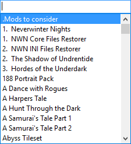
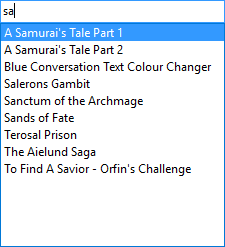
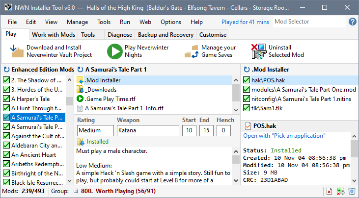

You can use the Mod Selector in the Menu Bar to to find and select specific Mods. Click in the Mod Selector box and start typing the name of the Mod you want to find or select.


You can click one of the items in the list or press Enter to select the highlighted Mod.

Use the Mod Selector to navigate to a Mod
Use Recent Mods to navigate to a Mod